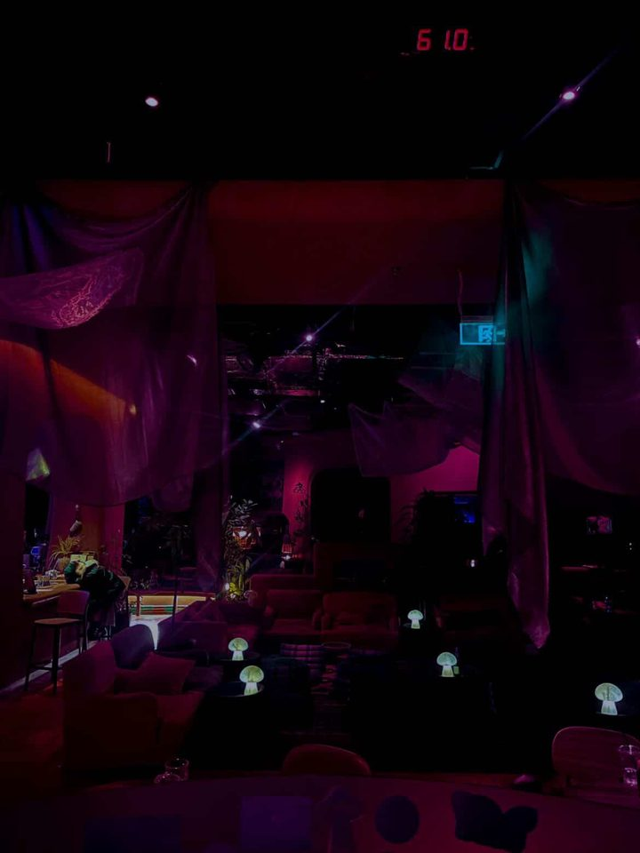
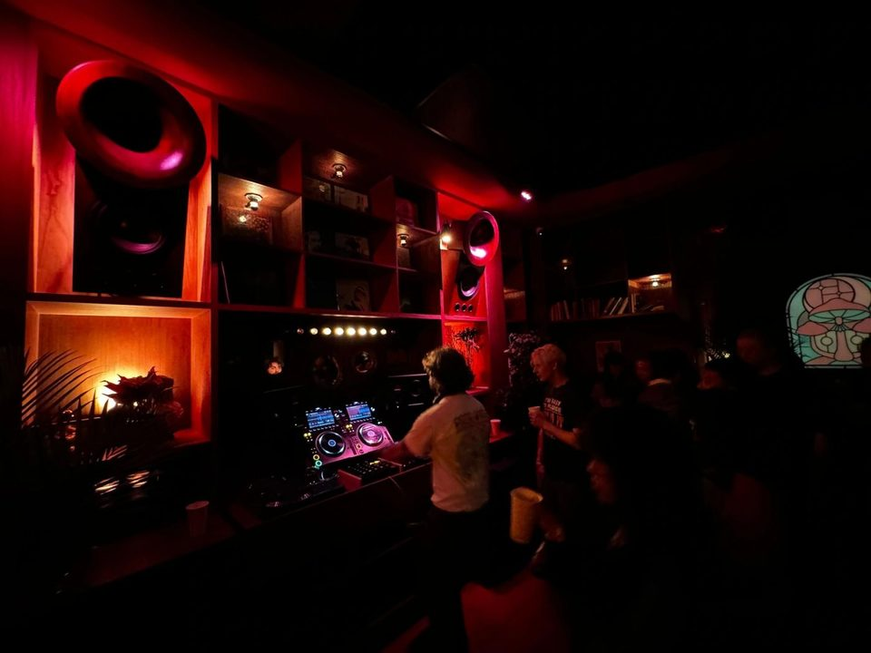
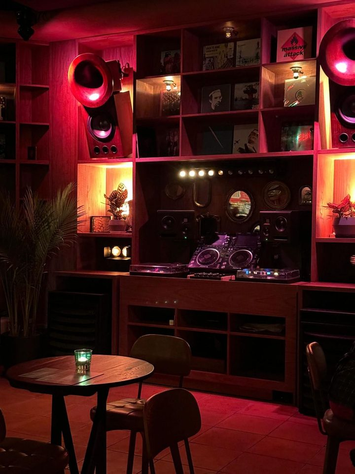
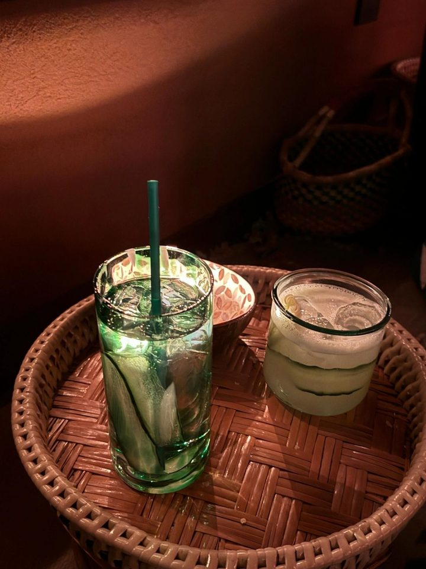
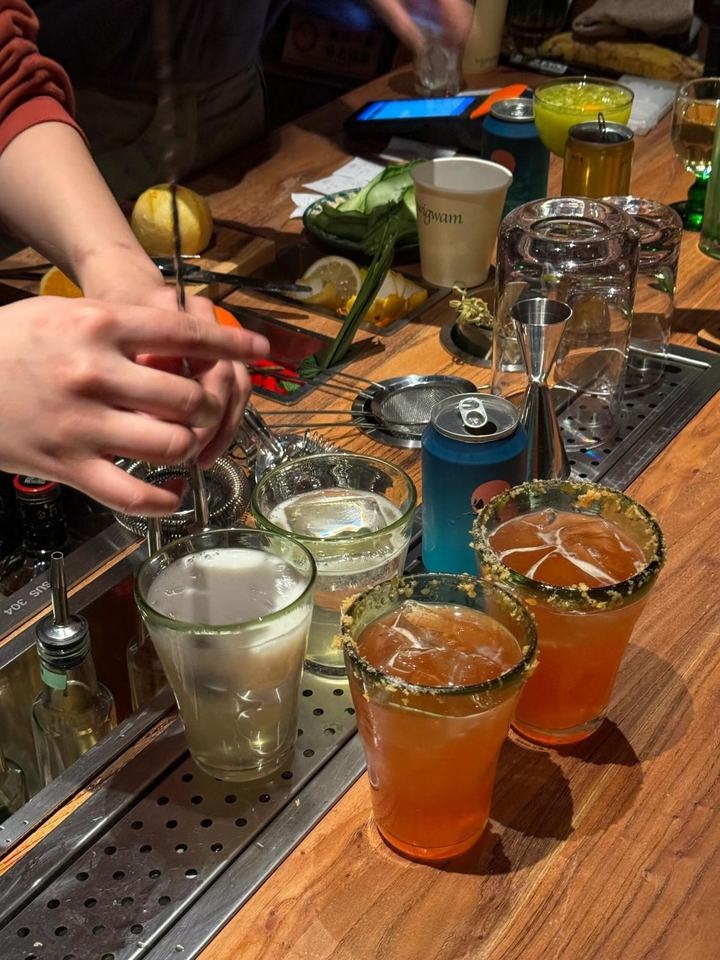
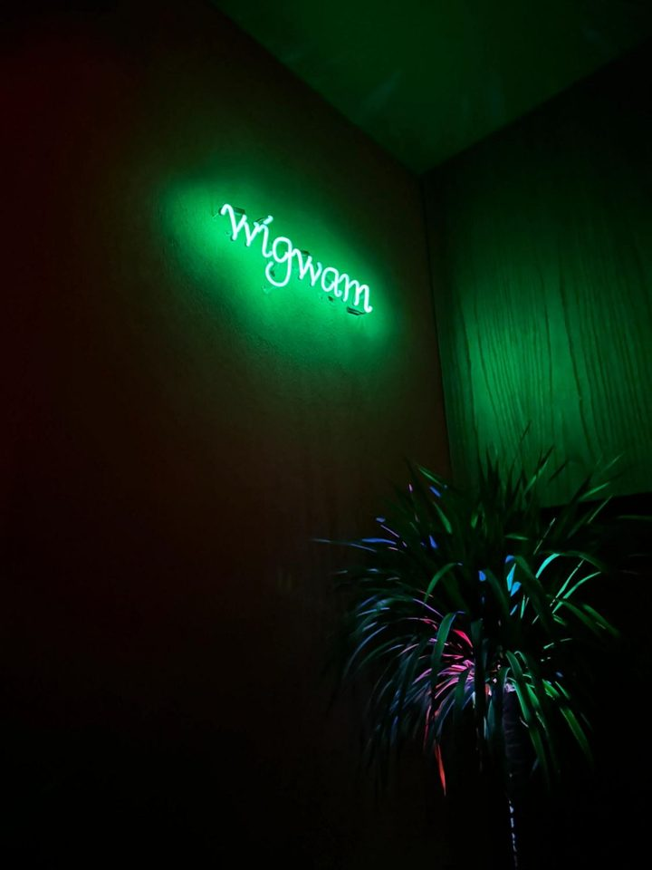

Wigwam
Electronic listening bar and club · Changning
LikelyFew Amap reviews · 12 Nov 2026





It books ambient, dub and techno. Lim Giong is listed for Sat 28 Nov; time and cover are unverified.
Few Amap reviews
The evidence for this one has a gap. Check on the day or call ahead.
Good to know
Recommends the Shanghai room and its adventurous bookings, including a Lim Giong DJ set.
Known for
Adventurous ambient, electronica, dub and techno programming.
What’s on
Sat 28 Nov: Lim Giong (listing only, time and price unverified)
Before you go
The Lim Giong night has only an editorial listing, with no verified ticket channel. Check the ticket channel and door rules; foreign-passport ticketing and entry are unverified.
Watch out
Some nights favour listening; 28 Nov time and cover are unverified.
What was checked, and what was not
Read on 12 Nov 2026
Dianping 3.5 from 238 reviews, read on 12 Nov 2026. Amap 4.7 from 18 reviews, read on 12 Nov 2026. Second source: Heatwolves, SmartShanghai club guide, Nov 2026. Recommends the Shanghai room and its adventurous bookings, including a Lim Giong DJ set. Evidence it is open: Dianping 12 Nov: listed with normal hours (shows resting until 11:00; open 11:00 to 24:00); RA event listing for 19 Nov 2026: Human Illusions 07.
Not checked
Amap has few reviews (18). Some nights favour listening; 28 Nov time and cover are unverified. Hours, prices and availability were not confirmed with the venue.